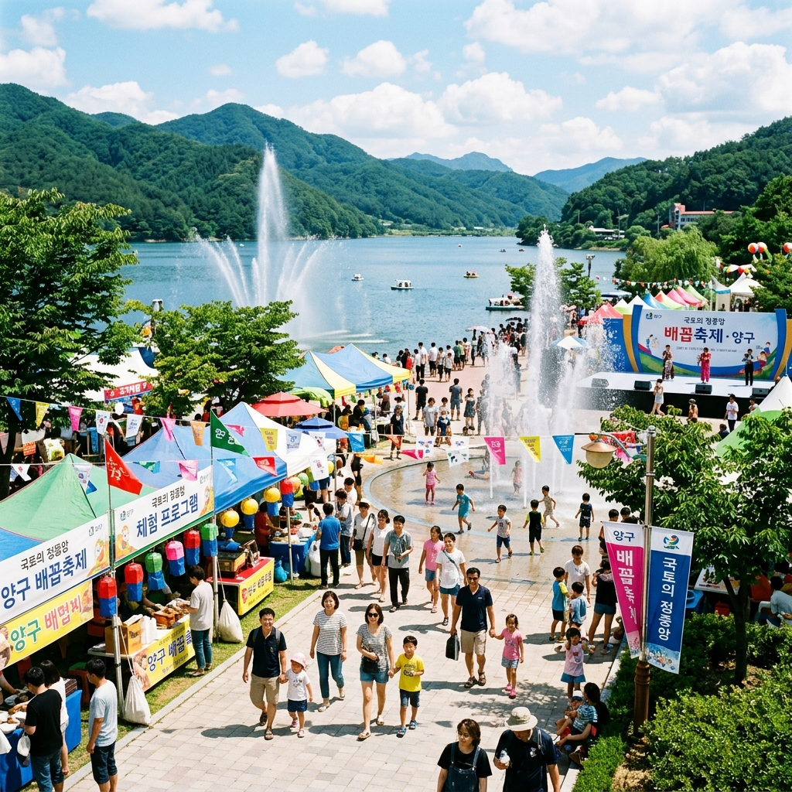
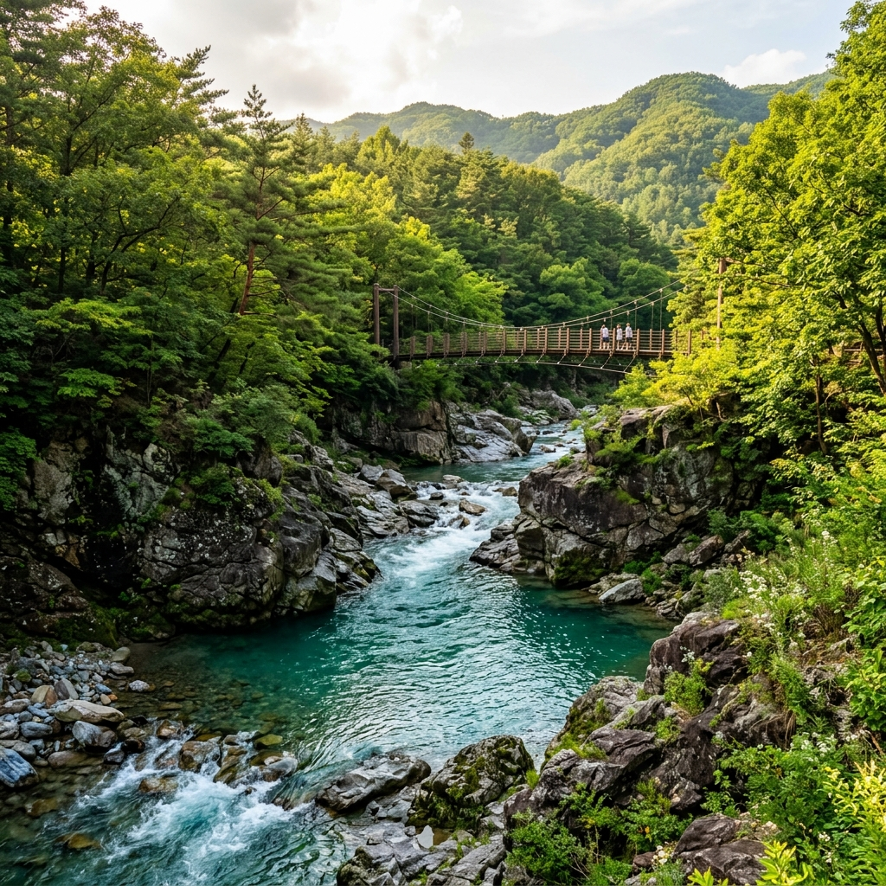
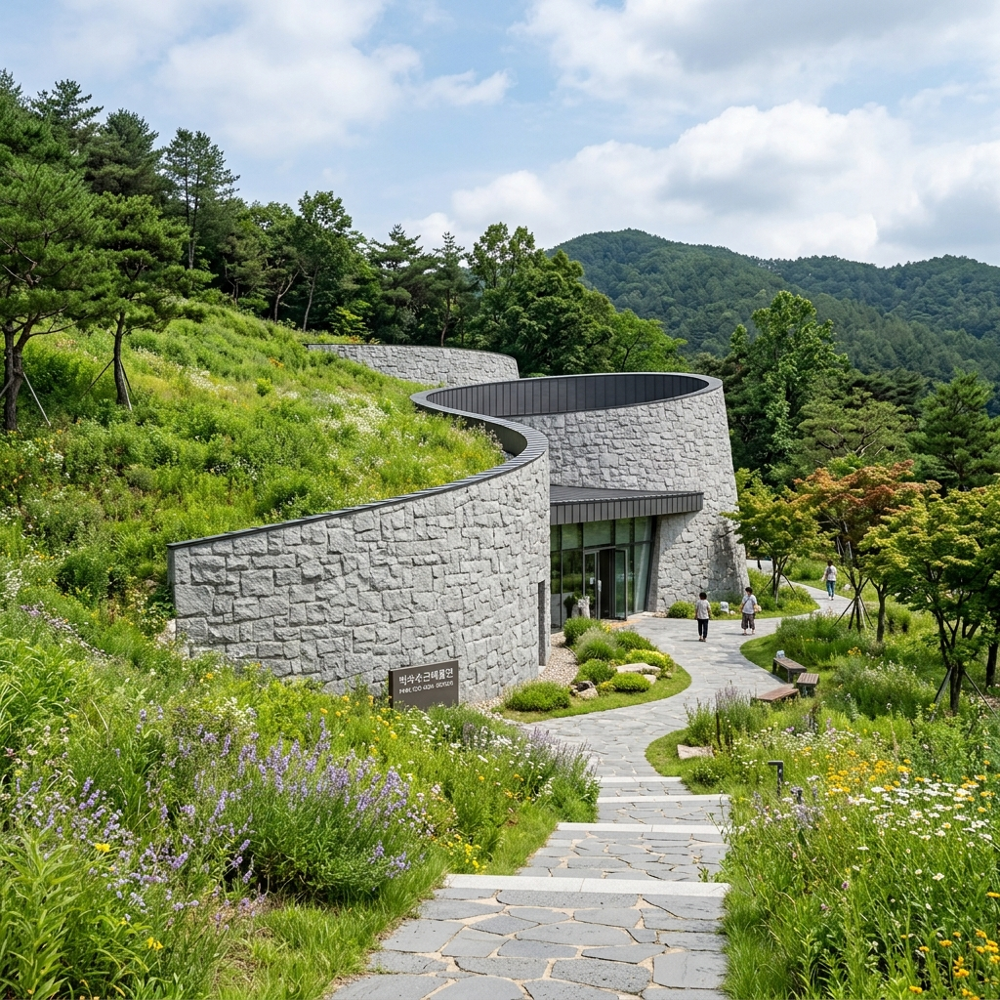
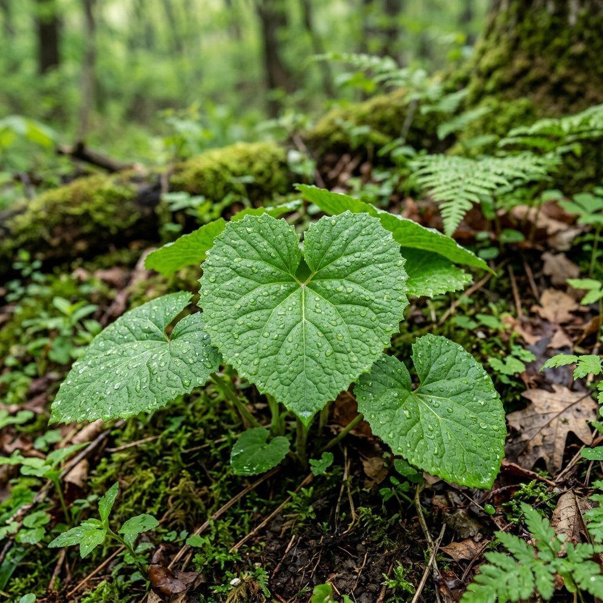

대한민국 국토정중앙,
청정 자연의 숨결을 만나다
한반도의 중심 양구에서 펼쳐지는 평화와 힐링의 대서사시. 아름다운 DMZ와 청량한 숲으로의 초대.
양구 대표 9경
천혜의 자연과 유구한 역사, 그리고 예술의 향기가 흐르는 양구의 대표 명소를 만나보세요.

양구수목원
대암산 기슭의 자연을 간직한 사계절 생태 학습관과 희귀 야생화들의 안식처.
한반도섬
파로호 호수 위에 놓인 한반도 모양의 아름다운 인공섬과 나무 데크 산책로.

두타연
50여 년간 민간인 출입이 통제되어 태고의 원시림을 고스란히 간직한 비경지대.

박수근미술관
한국 근현대 대표 화가 박수근 화백의 생가 터에 지어진 돌빛 예술 미술관.

양구백자박물관
조선 백자의 명맥을 잇는 백자 토의 고장 양구에서 전통과 백자 도예를 감상.
국토정중앙 펀치볼
화채 그릇 모양의 독특한 해안 분지로, 한국전쟁 격전지의 역사와 둘레길 체험.

양구 봉화산
해발 874m 산봉우리에서 마주하는 소양호 풍경과 멋진 운해, 일출 등정 명소.

상무룡출렁다리
파로호 물결 위를 시원하게 가로지르며 걷는 길이 340m의 아찔한 보행 현수교.

광치계곡
대암산 줄기를 타고 내리는 시원한 폭포수와 자연휴양림 숲속 힐링 치유길.
양구 인터랙티브 관광지도
지도 위 주요 명소 핀을 클릭하시면 양구군 구석구석에 숨겨진 보물 같은 관광 명소 정보를 확인할 수 있습니다.
관광지 정보를 선택하세요
지도의 마커를 클릭하면 상세 코스 정보, 소요 시간, 교통편 등을 즉시 조회할 수 있습니다.
산나물의 제왕, 양구 명품 곰취

곰취 생태 캘린더 (Seasonal Calendar)
대암산 맑은 바람이 키워낸 신비의 산나물
곰이 겨울잠에서 깬 직후 몸속 독소를 제거하고 원기를 보충하기 위해 가장 먼저 찾아 먹는다고 해서 '곰취'라는 이름이 유래되었습니다. 양구 곰취는 해발 1,000m가 넘는 대암산 자락의 청정 고산지대에서 재배되어 그 향이 다른 지역보다 월등히 깊습니다.
일교차가 심하고 서늘한 양구 해안면(펀치볼) 일대의 토양에서 자란 곰취는 잎이 매우 연하고 부드러우며 특유의 쌉싸래한 첫맛과 목 넘김 끝에 감도는 달콤함이 특징입니다.
나에게 딱 맞는 곰취 미식 매칭
평소 좋아하는 식습관이나 선호도를 선택해 보세요. 최고의 양구 곰취 요리를 추천해 드립니다!
관광 상품 통합 예약
민통선 출입이 필요한 안보관광 및 문화 해설사와 함께하는 명품 시티투어 예약을 한곳에서 해결하세요.
모바일 예약 티켓 발권
왼쪽 폼에 예약 정보를 입력하고 신청하시면, 이곳에 즉시 스캔 및 소지가 가능한 모바일 탑승권(Pass)이 발급됩니다.
양구 대표 축제
일 년 내내 볼거리와 즐길 거리가 가득한 청정 양구의 명품 축제를 소개합니다.

양구 곰취축제
대암산 자락에서 자라나 향이 짙은 양구 대표 산나물 곰취를 직접 수확하고 맛보는 봄철 최고의 축제.
양구 배꼽축제 (Baekkob Festival)
국토 정중앙 양구의 배꼽(센터) 상징성을 활용하여 한여름 밤의 음악, 댄스, 수상 레저와 불꽃놀이가 어우러지는 활기찬 연차 축제.

양구 DMZ 펀치볼 시래기 축제
서늘한 고지대 펀치볼 덕장에서 건조하여 비타민이 풍부하고 부드러운 웰빙 푸드 시래기를 주제로 한 가을 수확 축제.
양구 여행 자주 묻는 질문
양구 여행 계획을 세우면서 가장 궁금해하시는 질문과 주요 교통 정보를 정리해 드립니다.
1. ITX-청춘 열차 또는 경춘선 전철을 탑승하고 춘천역에서 하차하신 뒤, 춘천역시외버스터미널이나 동서울터미널에서 양구행 직행버스를 타시면 약 1시간 내로 도착 가능합니다.
2. 동서울종합터미널에서 양구시외버스터미널행 무정차 직행버스(하루 수차례 운행, 약 2시간 소요)를 이용하시는 것이 가장 편리합니다.
네, 두타연 및 을지전망대 등 DMZ 민간인통제선(민통선) 내 지역은 군부대의 철저한 보안 통제를 받는 구역입니다. 당일 현장 신청도 상황에 따라 가능하지만, 대기 시간이 길어질 수 있고 군 작전 시 입장이 제한될 수 있으므로 본 사이트나 양구군 안보예약 시스템을 통해 최소 2~3일 전에 사전 예약하시는 것을 강력히 권장합니다. 동행인 전원의 신분증(여권) 소지도 필수입니다.
네, 양구군에서는 외국인 단체 및 개별 관광객들의 편의를 위해 영어, 중국어, 일본어 해설 서비스를 무상으로 제공하고 있습니다. 시티투어 신청 시 원하시는 언어를 체크해 주시거나, 관광 개시일 최소 일주일 전에 양구군 문화관광과(033-480-2251)로 예약 전화를 주시면 전담 해설사를 매칭해 드립니다.
국토정중앙천문대 바로 옆 야영장(캠핑장)은 텐트를 설치할 수 있는 데크 구역을 보유하고 있으며, 인터넷 예약을 통해 사전 등록해야 사용 가능합니다. 깨끗한 식수대, 온수 샤워실, 그리고 밤바람을 맞으며 은하수를 감상할 수 있는 독보적인 천문 관측 인프라가 매력적입니다.
여행 준비 도우미
오프라인에서도 편리하게 참고할 수 있는 양구군 공식 여행 지도를 받아보세요.
대중교통 버스 운행 시간표
서울, 춘천 등 주요 도시에서 양구군까지 오는 시외버스와 양구 관내 주요 관광지로 가는 농어촌 버스 시간표입니다.